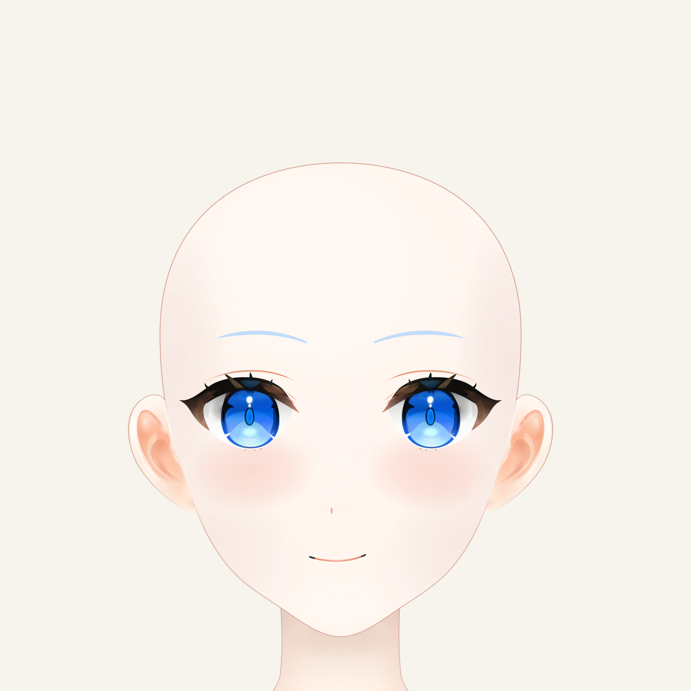
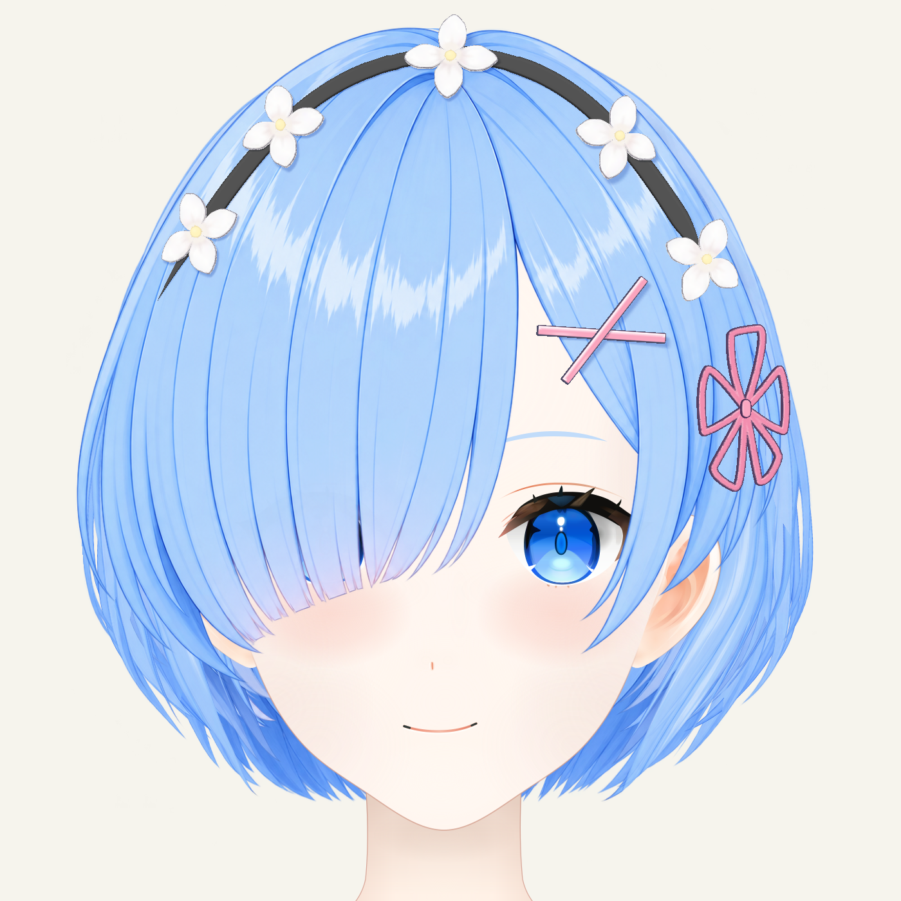
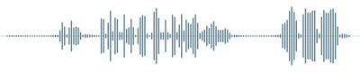

Live2D
Character motion
从分层原画到表情、口型与头发运动，研究角色在不同姿态下的形状一致性与动态表现。
- 已有工作
- 已有模型运行与口型时间轴基础，持续迭代眼部、转头和头发仿真。
- 继续验证
- 透视、遮挡、组合姿态与动作稳定性。
露格尼卡学院 · 独立课题组 SINCE 2026.08
Resonance · Embodiment · Multimodality
Cancan 任 REM Lab 独立课题组组长（PI）。课题组围绕 Live2D、AI 语音与 AI 翻唱开展研究，探索虚拟角色的动态表现、声音生成与多模态表达。
负责研究选题、实验设计、工程实现与评测，把关于角色表达的想法转化为可运行、可复现的作品。




Character motion
从分层原画到表情、口型与头发运动，研究角色在不同姿态下的形状一致性与动态表现。
Character voice
围绕角色音色、语言和表达方式，构建从语料整理到语音合成、试听与版本比较的实验流程。
Singing voice conversion
把人声分离、音色转换、逐句修整与混音串成可重复执行的工作流，以对照试听检验结果。
将“更像角色”拆成声音、形状、运动与表达上的具体问题。
固定输入、参考素材与版本，保留可重复运行的起点。
用姿态检查、对齐试听和问题台账观察变化，记录失败。
保存原始工程、实验记录与教程，明确已验证项和未解决项。
露格尼卡学院 · REM Lab · 第一届招生
这里的“研究生”，研究的是自己喜欢的东西。欢迎对 Live2D、AI 语音或 AI 翻唱感兴趣的同学，自带好奇心和脑洞，一起把喜欢的角色做出来。
有热爱，愿意动手，也愿意记录失败。
自选课题，边玩边研究，以作品交流。
让脑洞跑起来，让角色多一分生命力。
兴趣入学，成果毕业。学院是自己开的，研究是认真做的。